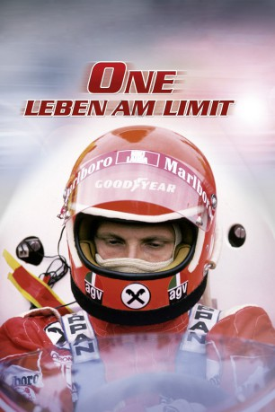
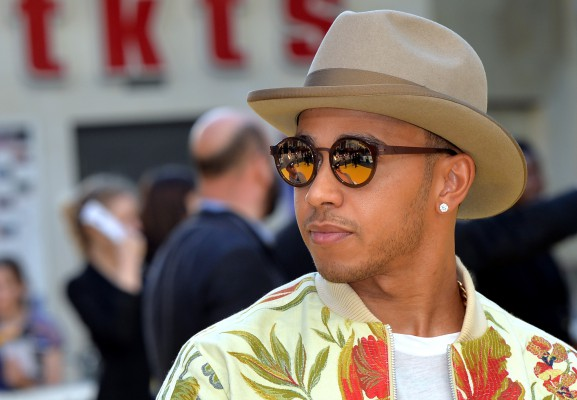
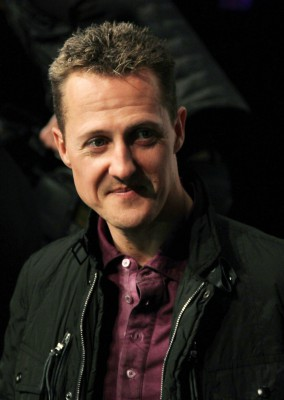
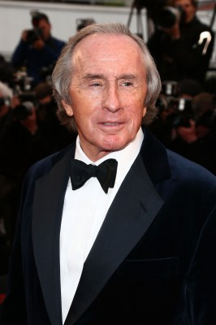

#4900 One - Leben am Limit
Alternativ: 1
 
 IMDB-Wertung: 8.0 / 10
IMDB-Wertung: 8.0 / 10  Metascore: 0
Metascore: 0 
Nach dem Zweiten Weltkrieg wird der Motorsport in Europa neu geregelt, und 1950 in England der erste Grand Prix der FIA (Federation Internationale de l'Automobile) ausgetragen. Die Veranstaltung gerät in den folgenden Jahren zur internationalen Erfolgsmarke, fortan konkurrieren die Nationen regelmäßig über Fahrer und Rennställe, gebiert der Sport dramatische Geschichten, erbitterte Rivalitäten und große Helden. Und weil seit den 70ern zunehmend in Sicherheit investiert wird, überleben letztere auch immer öfter.
Jahr: 2013
Dauer: 111 Minuten
FSK: 12
Land: USA Studio: Cathay-Keris FilmsTonspuren: DTS - ,
Untertitel:
Auflösung: 1080p (1920x1080) Größe: 8140 MB
Genre: Dokumentation, Sport, Geschichte
Regisseur: Paul Crowder
Drehbuch: Becca Topol
Soundtrack:
Darsteller:
 Michael Fassbender als Narrator
Michael Fassbender als Narrator- Niki Lauda als Himself
-  Lewis Hamilton als Himself
-  Michael Schumacher als Himself
- Jenson Button als Himself
-  Jackie Stewart als Himself
- James Hunt als Himself , archive footage, uncredited
- Ayrton Senna als Himself , archive footage, uncredited
- Mario Andretti als Himself
- Sebastian Vettel als Himself
- Bernie Ecclestone als Himself
- Eddie Jordan als Himself
- Damon Hill als Himself
- Jody Scheckter als Himself
- Martin Brundle als Himself
- Sid Watkins als Himself
- Nigel Mansell als Himself
- Freddie Hunt als Himself
- John Surtees als Himself
- Emerson Fittipaldi als Himself
- Robert Kubica als Himself - Polish Formula One Driver
- John Miles als Himself
- Max Mosley als Himself
- Jane Birbeck als Herself
- Jacky Ickx als Himself
- Jo Ramirez als Himself
- Brigitte Hill als Herself
- Nina Rindt als Herself , archive footage
- John Watson als Himself
- Eddie Dennis als Himself
- John Hogan als Himself
- John Barnard als Himself
- Koen Vergeer als Himself
- Herbie Blash als Himself
- Maurice Hamilton als Himself
- Roy Topp als Himself
- Sally Swart als Herself
- Paddy McNally als Himself
- Nigel Roebuck als Himself
- Clive Chapman als Himself
- Brett Lunger als Himself
- Lord Hesketh als Himself
- Colin Chapman als Himself , archive footage
- François Cévert als Himself , archive footage, uncredited
- Enzo Ferrari als Himself , archive footage, uncredited
- Ronnie Peterson als Himself , archive footage, uncredited
- Peter Revson als Himself , archive footage, uncredited
- Roger Williamson als Himself , archive footage, uncredited
Datei: X:\Dokumentationen\Sport\One - Leben am Limit (2013, FSK12, 1920x1080).mkv seit 29.11.2016
Festplatte: HD Serien(SU-Z)+Dokus+Musik
 Es gibt insgesamt 34 Filme in der Gruppe 'Dokumentationen\Sport'
Es gibt insgesamt 34 Filme in der Gruppe 'Dokumentationen\Sport'